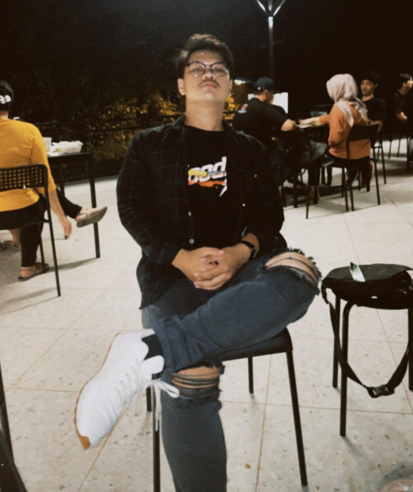

D
arius Andreano
Jangan takut berjalan lambat, takutlah jika hanya berdiri diam.

Saya ucapkan terima kasih atas kunjungan anda ke Website ini. Pada website ini anda dapat melihat profil data diri dan aktifitas yang saya lakukan. Saya menggunakan HTML dan CSS dalam pembuatan Website ini. Website ini saya buat sebagai Project UAS. Saya sudah semaksimal mungkin dalam mengerjakan Website ini dengan menggunakan seluruh kemampuan dan waktu yang saya punya. Demikian dan Terima Kasih Selamat Berselancar :)
Read Bio >Jangan takut berjalan lambat, takutlah jika hanya berdiri diam.
Saya adalah anak pertama dari 3 bersaudara, saya juga mahasiswa di Universitas Serang Raya, Jurusan Sistem Informasi. Saya sedang berjuang untuk mendapatkan nilai yang terbaik. Saya mempunyai keterampilan di bidang Music, IT, Olahraga, Dan Juga Multimedia. Saya juga 5 lulusan terbaik di SMKN 1 Kota Serang, dengan lulusan terbaik saya mendapatkan penghargaan berupa Sertifikat Garuda dimana dapat berfungsi di dunia kerja nantinya. Saya juga berkuliah di Universitas Serang Raya dengan mendapatkan beasiswa 70%, yaitu dengan bekerja dan menjadi Asisten Lab. Intinya tetap berjuang dan semangat akan hidup, Karna jika Tuhan masih kasih kamu koma, jangan kamu kasih titik. Sekian perihal tentang saya mohon maaf jika ada salah kata atau pengetikan. Semoga nilai UAS nya bagus AMINN.